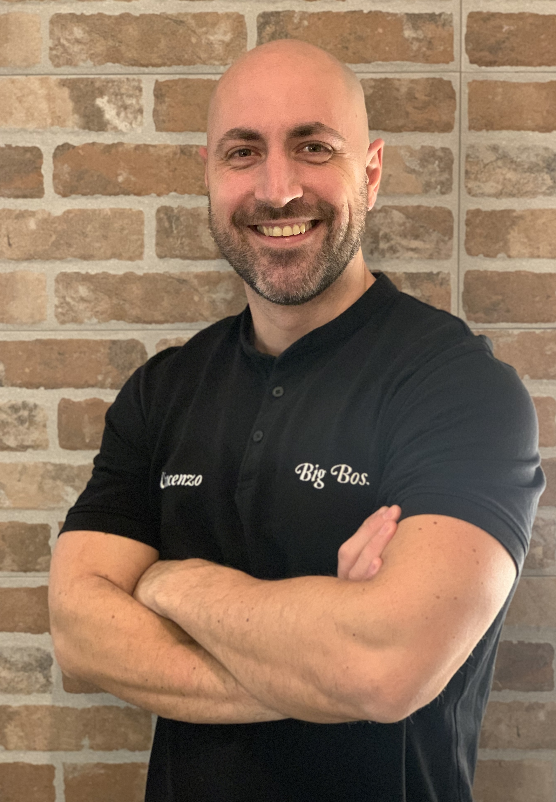

Vincenzo
VINCENZO
. Fondatore e titolare dei negozi
. Diplomato presso Unione Artigiani nel 2000
. Soprannominato "Big Boss" per la sua passione per il bodybuilding
. Insegnante presso scuola ACOF Olga Fiorini di Bergamo nell'anno scolastico 2017/2018

Federico
FEDERICO
. Dipendente e responsabile del salone di Selvino
. Diplomato presso ABF di Bergamo nel 2018
. Soprannominato "Scarface" per aver fatto diventare l'omonimo film il suo preferito
. Appassionato di vari sport come la palestra, lo sci e il ciclismo

Beatrice
BEATRICE
. Stagista del salone di Albino
. Frequentante la scuola ACOF Olga Fiorini di Bergamo
. Soprannominata "mandarin girl" per la sua golosità verso il famoso frutto
. Una delle sue più grandi passioni è viaggiare